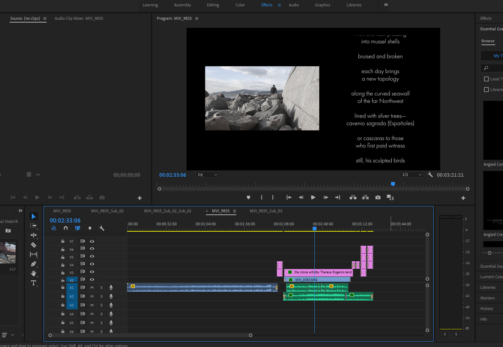

“A stone artist patiently stacks stones in his own world along the seawall, completely unstirred in the midst of the busy and chaotic city life”
Overview
Collaboration with Vancouver's Poet Laureate: Fiona Tinwei Lam and her initiative the City Poems Contest
roles
Screen Writer, Producer, DoP, Editor, Effects Artists
team
Brandyn Chew, Erin Choi, Jalene Pang
duration
November – December 2022
tools
After Effects, Premiere Pro, Davinci Resolve 18, Canon t6i
This was a project produced for a university class IAT 344 Moving Images, where we were tasked to create a poetry video along with a short documentary in a team of 4. The film was a collaboration with the Vancouver’s Poet Laureate: Fiona Lam and her initiative the City Poems Contest. We chose the award winning poem 'the stone artist' by Theresa Rogers.
ideation
Concept
Initially, the team chose this poem to create a film to interpret the poem literally. However, as we started brainstorming, the timing, location, and weather conditions were not a great fit to showcase the storyline.
When we started individually brainstorming, the idea I came up with was to drift away from a literal interpretation and to make it more abstract. I wanted to express the life cycle of the stone artist/art: the stone artist’s artistry that occurs each day without being sighted by the people but the nature around it. With additional research, the concept I built was the contrasting lives between the peacefulness of stone artist and the busy everyday life cycle in the city.
Film concept slide
The storyline expanded to showcase the 2 different worlds: peaceful nature side with the stone artist’s stacking vs. the busy, fast-paced side which ultimately disturbs the nature, knocking down the cairns.
Storyboard
With the basic storyline in mind, we created a mood board and a storyboard to picture the art direction of our film concept. The storyboard helped map out the scenery we wanted to create alongside the audio.
To keep the video more abstract, we decided to use sound effects to express the nature and the cityscape instead of including the narration.
Quick storyboard for visualisation
Art direction moodboard: stone photos and ocean with seagull taken by Grace Y
Link to our Press Kit
Behind the Scene
The film session spread in a span of 6~7 days.
During the photoshoot, as the director of photography, I filmed majority of the scenes with the stone artist by the sea and some b-rolls for the cityscape. The film location was set in Stanley Park and the Seawall while the cityscape was filmed in Downtown Vancouver.

Behind the scenes with the team
Post Production
As one of the main editor and effects artist, I created the baseline for the poetry film using the program Adobe Premiere Pro and Davinci Resolve. The initial process started off with sifting through the footage to select the best shots for a smooth flow. Then I worked on colour correcting and added the vintage effect to make the film more nostalgic. Luckily cutting and patching the sequence wasn’t as difficult as we filmed scene by scene and additional b-rolls to fill in any holes we may have while editing the scenes.
One of the hardships was working on two different programs. The second editor did not have Adobe programs, I struggled to convert the Adobe Premiere Pro file into Davinci Resolve. As the effects feature are completely different, I could not convert the effects I created in Premiere. To resolve this issue, I took the chance to rework all of my footage in the new program. In the end I was able to go back and forth combining the clips and getting the final composition exported on time.
Title Sequence
For the introduction of the video, I created a short-animated typography sequence for the title using Adobe After Effects. The initial version was a simple swipe transition with a san-serif font. This effect wasn’t used for the final version as it lacked connection between the modern style of the animation compared to the vintage imagery of the film. To bring back the connection, I decided to use a serif font using a particle dissolve effect. I wanted to blend in the title sequence into the scene where the title starts to dissolve as the stone artist walks away. The sequence was created using the particle systems and linear wipe feature.

Initial title sequence
Final title sequence
Credits
I created the ending credits for the poetry video where we added an ending sequence along with a poetry reading by the poet Theresa Rogers. The challenge I faced was matching the timing of the caption scrolling to the narrator’s voice. It was several trial and error sessions to adjust the position and the speed of the scroll as I was not able to adjust the speed of the narrator’s voice without altering the tone.
To make sure the text is legible on screen, I decided to span the poem across the screen, rolling bottom up as the post-credit scene was playing. Then I had the credits fade in and out to reveal the information at once to meet the time requirement of the project and the contest.
Poetry scroll with post credit scene
Post credits at the end
Final film
Birds of Stone
Combination of Poetry film and Documentary:
Award
The final video received two awards – Audience Choice for the poetry film and Best Cine for the documentary during the final film screening in class. Furthermore, recently our film has been recognized with an honourable mention at the Vancouver City Poems Video Poetry Awards and Screening.

conclusion
Reflection
I am proud of the outcome of the video and enjoyed learning the process of filming and editing. I was able to improve my leadership skills, organizing and keeping track of the progress while directing the film as I lead the team each day. Furthermore, it was one of my first official filming experience and learning to adjust the camera settings to keep each footage similar in colour tone during the shoot each session.